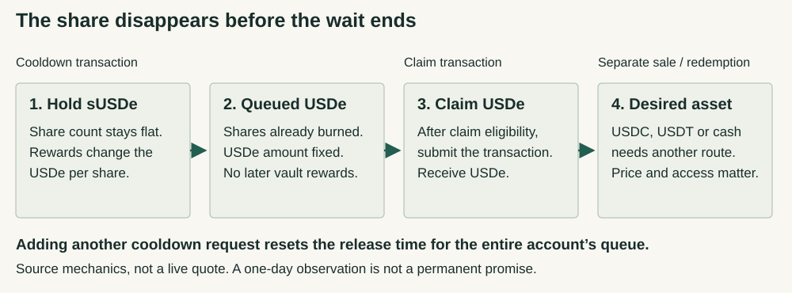

USDe / understand the claim
Follow the dollar.
Then follow the exit.
A dollar-like token is only the start. Understand what you own, who can change its rules, and what has to happen before you receive the asset you need.
LATEST RESEARCH · 13 SEPTEMBER 2026
Unstaking is not the same as getting out.
The shares disappear before the wait ends.
On the inspected native Ethereum route, a confirmed cooldown burns the requested sUSDe shares and fixes an amount of USDe. That amount stops receiving later vault rewards. Another request replaces the entire account's release time; claiming still returns USDe, not cash.

The new controller review distinguishes ordinary scheduled execution from a separate role-gated, target/function-whitelisted path. It does not establish today's membership, whitelist or a universal notice window. Source code and current authority are different evidence layers.
Start with the position you hold
| Position | Practical consequence | Authority and evidence limit |
|---|---|---|
| USDe in a wallet | Transfer, sale and issuer redemption are different routes. A primary stop need not stop base transfers. | Token-owner and Mint V2 roles control different powers. The dated owner is known; the upstream chain is not closed. Control evidence. |
| sUSDe or a cooldown claim | A confirmed request burns shares into fixed USDe. A top-up replaces the account's release time; claim still returns USDe. | Staking roles govern parameters and restrictions; a holder's new request changes the queue clock. Current roles remain unverified. Stage-by-stage evidence. |
| A borrowed or collateralized position | Debt and liquidation conditions continue while an exit waits. An accounting value is not a sale quote. | The exact lender, oracle and liquidation route add controls. No current market or debt position is verified here. Added-risk evidence. |
USDe in your wallet
Sending, selling and redeeming with the issuer are different actions. Follow the direct route →
Staked USDe
A flat share count, a USDe-per-share rate and a dollar sale price are not the same number. Follow the calculation and queue →
A token built on top, or a borrowed position
Maturity tokens, senior claims and loans add conditions to the underlying exposure. Unpack the extra layers →
Keep the date attached to the number
The earlier Ethereum snapshot is block 25,952,841, 11 September 2026 at 08:03:35 UTC. Its 5-of-10 Safe, global mint/redeem ceilings and 24-hour staking cooldown describe different scopes, not a permanent or protocol-wide guarantee. Read the control investigation and its curated observation record.
What improved—and what remains open
Source-level staking accounting and controller reachability are clearer. Current roles, the complete upstream Safe/controller chain, staking-owner and Silo deployment checks, backing reconciliation and executable market exits remain unfinished evidence questions. See the audit scope and how evidence is classified.
Browse all three dated reports. Earlier research remains readable when the current picture changes.